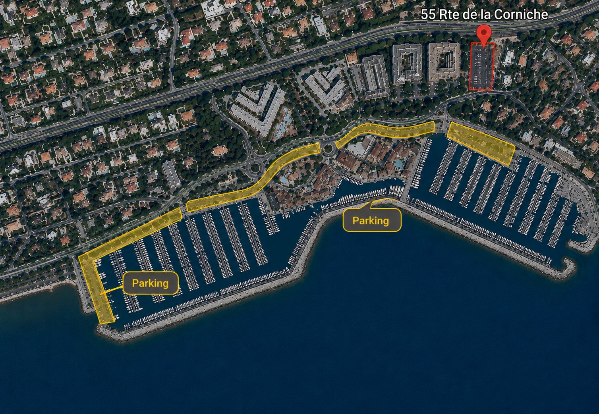

LA
LES APPARTEMENTS
DE LOUIS
Su llegada
Apartamento Jade
Siga los pasos siguientes para acceder fácilmente a su apartamento.
Dirección
Cap Raphaël – Apartamento 11
55 Route de la Corniche
83700 Saint-Raphaël
Acceso a la residencia
Portón
1927
Puerta peatonal
2719
⚠️ IMPORTANTE
Coloque una rueda sobre el lazo amarillo para activar la apertura del porton.
Coloque una rueda sobre el lazo amarillo para activar la apertura del porton.
Aparcamiento
✔ Hay aparcamiento gratuito dentro de la residencia.
✔ Si el aparcamiento está completo, utilice uno de los aparcamientos que se muestran a continuación.

Acceso al apartamento
1
Entre en la residencia.
2
Gire a la derecha bajo el porche BAT AB.
3
Tome la segunda puerta a la derecha.
4
La caja de llaves está situada a la derecha de la puerta.
5
Recibirá su código de acceso el día de su llegada.
¿Necesita ayuda?
Vea el siguiente vídeo con las indicaciones para llegar al apartamento.